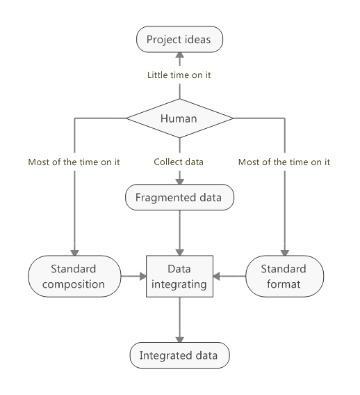
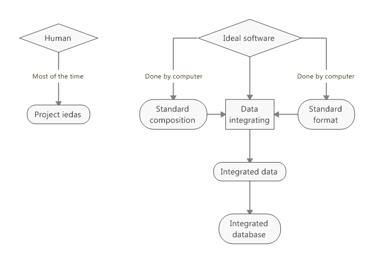
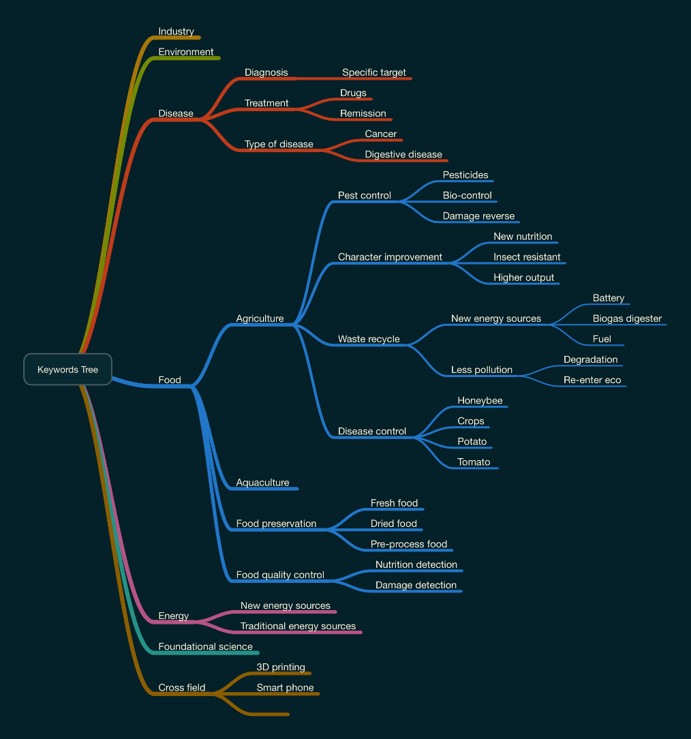
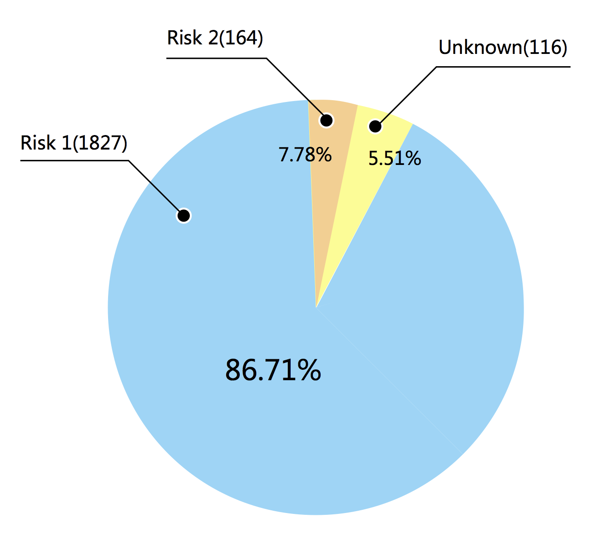
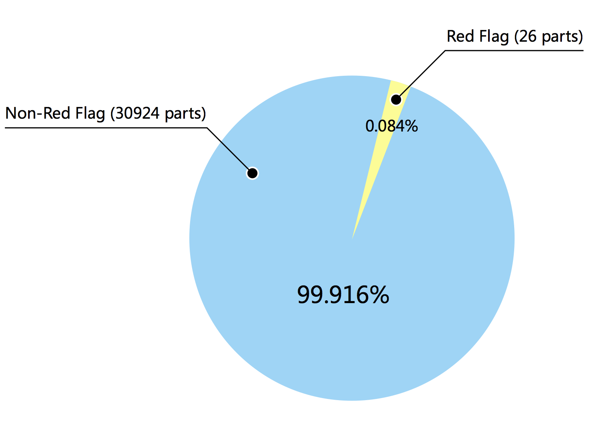

Human Practice
Synbio is just a S-Din away!
SYSU-Software 2017
Overview
During our project "S-Din", we brainstormed many aspects concerning our project, and took them into practices to confirm or to overturn our hypothesis. Then, we tried to integrate them into our final project in order to improve the project functions and user experience.
Through discussions, interviews with professionals or scholars in different fields, and search related policies, we had a better awareness of our project in the context of scientific inspiration, societal attention, safety and security, and legal considerations.
When designing the project we integrated many fine details into the software. We tried hard to make more positive contributions to scientific and societal practices, and reduce and even eliminate the potential negative impacts.
Combined with user needs investigation and social promotion, our project is a new product in fact. We wrote a user statement for our product.
We also communicated with public in our special activities and what we learned from them.
We also acknowledge all the help and collaborations with other iGEM teams and express our sincere gratitude to them.
Silver
During the project, we brainstormed many aspects concerning our project. These aspects can be roughly divided into two basic problems:
- What advantages will our project have to raise scientists’ ideas, which may lead to a wonderful genetic design? Or what to raise ordinary bio-lovers’ interest, which may attract them to learn more about synthetic biology?
- What impacts will our project have in different fields of society?
Through discussions, interviews with professionals or scholars in different fields, and search related policies, we had a better awareness of our project in the context of scientific inspiration, societal attention, safety and security, and legal considerations.
Interview of other iGEM teams and ordinary bio-lovers
Motivation
Every production (including a software) is designed for users' needs. We hope to learn about what problems other iGEM teams meet, and to analyze what they need to solve their problems. What’s more, the intention of ordinary amateurs is also supposed to be taken into account.
Practices
This summer, we were very glad to communicate with an iGEM team NJU-China. They got in trouble when they urgently needed to collect some data online, what happened to be our strong point as we are a software team. We provided a script to them and solved their problems. Check collaboration for more details.
And then we communicated with NJU-China team members on reasons for their problem. We found that their problem was probably based on fragmented data.
We conducted a discussion among our team members about fragmented data. Nowadays data or information online is abundant but scattered. Many people spend much time on integrate them by themselves
In fact, they should spend more time on their ideas for their core work.

How a man may assign his time in a project when getting integrated data without a dedicated software

How a man may assign his time in a project when getting integrated data with a dedicated software
At the same time, we chatted with some students who are interested in biology work. They told us, “We’ll like the software if it shows details of each bio-project, in a way easy to understand.”
Inspirations on our project
An Integrated database is very important for an iGEM team, also for research group. Our software is supposed to establish such a database in a standard and easy-to-understand format. It will save one's time, which enables one to focus on his project ideas.
Studying the needs of biology labs
Motivation
Apart from iGEM teams, biology labs and other biotechnology institutes have more rights to speak from a genetic circuit design in papers to a practical experiment protocol in labs. It is also very interesting and exciting to meet them who will be most likely to be affected by our project imagine.
Practices
During the summer, we visited several biology laboratories of Sun Yat-sen University. Researchers warmly greeted us. Thanks to Prof. Lu Yongjun’s help, we finished our interlab task and wet-lab validation in his laboratory.
By talking with researchers working in the lab, we were surprised that lack of ideas is one of the common problems when they work on a synthetic biology project.
“A good beginning is half done. That is to say, a good idea of genetic circuit design is half done of the whole project.” A researcher named Dong told us.
Since ideas are so significant to a project, where do researchers’ ideas usually come from? We did a small survey of researchers in several labs.

From the figures above, we learned that the majority of researchers’ idea source is professional research articles and journals, they’re all previous work, but a novel idea may arouse from them if the researcher reuses their essence and aims to an accessible direction. However, each paper usually describes its design in the author’s own style and standard, which is usually hard to understand and absorb its design ideas for one’s own creative work.
“We all hope to stand on shoulders of the giant, but it's hard at this stage to combine or transfer the senior's ideas in order to form my own ideas.” Researcher Dong said.
Inspiration of our project
How to trigger one’s inspiration is a challenge for us, because “inspiration” is such an abstract concept, and is hard to measure. But hope is still alive: several related previous work may create a new idea. To find out related projects and to guide users to a clearer direction, are what we consider to realize in our software.
Consulting the Biosafety and Ethics Advisor
Motivation
How to guide the public attention to bioethics and biosecurity, which is the urgent need before we design and develop our project. We are particularly concerned about one question:
What biosecurity risks are easily ignored by us in a virtual genetic design in the computer?
Practices
In September, our team visited Prof. He Zhumei, a biosafety advisor from Biosafety Committee of Sun Yat-sen University. He not only researches biology, but also devotes to guiding the public to bioethics and biosafety.
Prof. He was surprised by our visit. He said it was commendable for us to consult biosafety problems. Half an hour of happy communications, Prof. He patiently answered our confusion, and gives a lot of new aspects to think about the perspective of bioethics.
Professor He emphasized the signification of biosafety awareness, and the real biosafety is supposed to be reflected in each step of operation. As a development team for biology software, it is our responsibility to remind the users to follow safe and reliable design principles, and to warn the users of dangerous operations. This proposal from Prof. He filled with new inspiration for us.
Inspirations on our project
After the consult to Prof. He, we realized that we have more responsibilities of biosafety warning and guiding. What’s more, it would be better if we establish a way of communication with users. We’ll finish this goal by improving our interactive interface with users.
Consulting Microsoft staff about Information security
Motivation
We developed a software this year. The software may collect users’ information of interests, account and activity on the webside, and use the information for further functions. It’s our responsibility to protect user privacy. So we need to learn and follow relevant policies.
Practices
We consulted Mr. Li Yuzheng for related software policies and practices. Mr. Li majors in software, and has worked in Microsoft Research Asia. He told us that it is necessary to write a software statement, and show the statement to users when they first use our software. Only when users agree to provide their private information can our software collect and use it.
Inspirations on our project
According to Mr. Li's advice, we checked our software again, made sure that we never collect users' private information without agreements, and wrote a software statement with the help of legal professionals. See statements
Consultation on intellectual property issues
Motivation
In our project, we hoped to collect and show some excellent iGEM projects posted on igem.org and research papers published in academic journals, in order to enrich our integrated database and offer better resources to users. Although we’re non-profit all the time, we are still supposed to consider intellectual property issues.
Practices
We consulted Prof. Li Yang on intellectual property issues. Prof. Li was from School of Law, Sun Yat-sen University, researching laws of intellectual property. We introduced the specifics of the literature citation to Prof. Li. He carefully helped us understand the citation terms and conditions, and explained how the paper license works. With his help, we make sure that we’re approval to use every paper and every iGEM project in our database.
Inspirations on our project
The awareness of intellectual property is very critical for us, especially when we design an open website to share others’ papers and other achievements.
Gold
When designing the project we have come up with many fine details for the software. Some came from our original ideas, others came from professionals in different fields.
We tried hard to put these inspirational details into application of our software "S-Din". We tried to make more positive contributions to scientific and societal practices, and reduce and even eliminate the potential negative impacts.
Integrated database
Inspirations we have learned
By communicating with other iGEM teams, and chatting with different bio-lovers, we realized that fragmented data costs a lot of time and energy. We hope to establish such a database in S-Din, in a standard and easy-to-understand format. It will save one's time, which enables one to focus on his project ideas.
Integrated into project
In S-Din's database, we standardize a new data format for different types of data: parts, projects, key words and papers. Based on this format, our database is integrated into a unity, and accessible to set up interaction network and analysis. The S-Din search engine and S-Din Design are both working under this standard.
Key Words Tree & Network Analysis
Inspirations we have learned
We interviewed several lab researchers, and found that how to trigger one’s inspiration is a challenge for us, but several related previous work may create a new idea. To find out related projects and to guide users to a clearer direction, are what we consider to realize in our software.
Integrated into project
In order to stimulate one's inspiration in synbio work design, we tried the following explorations: The tree of words, and network analysis.
The tree of words: When you first enter the search engine of S-Din, you could search any word you like, or try selecting a word to explore more! When clicking, You will see the subordinated words. After few repeats, you will finally get the projects that you want. This function is designed to help specify your need, and help you understand your idea better.

network analysis: This function is designed to help you find out potential interaction between two parts, projects or key words. Sometimes the recommendation may be hard to understand, but perhaps it would open a new direction and lots of inspiration for you.
S-Din Statements
Inspirations we have learned
According to Mr. Li Yuzheng's advice, it is necessary to write a software statement, and show the statement to users when they first use our software. Only when users agree to provide their private information can our software collect and use it. What's more, Prof. He Zhumei reminded us of adding biosafety statements and interactive interface with users.
Integrated into project
We combined the software statement with biosafety statement, then wrote the integrated S-Din statements. See statements
Integrated Human Practice
S-Din is a product born for solving synthetic biological problems and serving the biologists and ordinary people who are interested in synthetic biology. In our "Integrated Human Practices" page, we'll show essential human practices work we have done around S-Din, including user needs analysis, function improvement for user feedback, product assessment and public promotion.
User needs analysis
Study the needs of ordinary bio-lovers
At the same time, we chatted with some students who are interested in biology work. They told us:
"We'll like the software if it shows details of each bio-project, in a way easy to understand."
"It would be better if the software can provide basic analysis of the work."
"Could you develop a software which can recommend interesting projects of my own?"
......
We found that the needs above are the most popular. To achieve these goals, an enough huge and integrated database is critical. Of course, mathematical algorithms should be equipped in our software.
Project Assessment
Safety assessment
We examined all parts in our database, and no part is from chassis of Risk Group 3/4. The "Unknown" parts are examined again with DSMZ Database. They are safe enough.

We checked the parts again to judge if it has "Red Flag" tag. Only 26 parts is tagged. Since we are dedicated to providing an open platform for synthetic biology, the user won’t be limited if they search for ‘Red Flag’ parts; However, users will be warned and advised not to do so once they attempt to design new circuits with ‘Red Flag’ parts.

Societal effect assessment
Once we had ideas of S-Din, we interviewed professionals or scholars in different fields, and searched related policies. We had a better awareness of our project in the context of scientific inspiration, societal attention, safety and security, and legal considerations.
Din was finished, we introduced it to the professionals. With their advice and help, we wrote a product statement combined with biosafety, legal consideration, rights and obligations, etc.
Public promotion
When S-Din start to take shape, we promoted it to several iGEM teams and biology laboratories. They were interested in our software and tried out, then we were glad to recieve their encouraging user assessment:
"Your database is wonderful! Our project may be more smoothly if cooperated with S-Din!" by Hong_Kong_HKUST
"An integrated software for synbio community." by SCAU-CHINA
"An inspiring try, I like it very much. Hope it will be more perfect in the future, and our lab could really use it." by Researcher Shen from Prof. Lu Yongjun's laboratory
"More professional articles in database might be better?" by Researcher Lin from Prof. Yang Jianhua's laboratory
We are very excited to witness a hit from public when S-Din first met with them. Although this version of S-Din is still primary, we'll continue to create a better product.
Public Engagement
iGEM is not only a competition standing at the front of synthetic biology, but also a good chance and a platform to introduce synthetic biology to the public. Further, we should never “work behind closed doors” — though non-technical individuals may lack knowledge about synbio, they might provide us with many sparkling ideas and inspirations on our projects -- That's also S-Din's goal. More importantly, if our project is hardly understandable to the general public, then it cannot be a successful one. If we can establish a bi-directional communication with the public, we can get more feedbacks on our project and, based on the feedbacks, we can make our project more accessible not only to the scientists but also to the public.
Biology Festival: introduction synthetic biology to public
Collaborated with SYSU_CHINA iGEM team, we held a parade in the campus to introduce synthetic biology to the public. Our audiences included students of life sciences and many other majors, teachers of different backgrounds, and residents in the campus who are neither students nor teachers. Our parade includes 2 parts: Design a circuit; Project sharing.
As for the “Design a Circuit” part, we designed a funny game. The participants were allowed to design gene circuit based on the genetic parts provided by us for specific purpose. At first, we thought this game would be very easy. All they need to do is just put the genetic parts in the right orders to complete a circuit. The situation, however, is quite different from what we expected. We explained to them what the promoter is, but it was so hard for them to understand, not to mention completing a circuit. Since most of the students lacked related knowledge, few students attended this game. And those who attended this game required a lot of hints to finish the circuit.
In terms of the “Project Sharing” part, we presented the project of 2015, CORE. We demonstrated the function of our software. They also gave us some suggestions.
"Although I can't understand more about synthetic biology, I still feel very interested in your work and ideas." To our surprise, a student told us when the Biology Festival ended.
Mini lectures for freshmen & high school students
We held several mini lectures for freshmen and high school students. In these lectures, we introduced our project this year -- S-Din, as well as principles of synthetic biology. We received their remarks to our project. From communication with them, we found some previous defect of S-Din, and their views help us think more about the project and improve it.
"Synbio Summit" with people from different fields
What would happen if people from different fields get together to talk about synthetic biology? We decided to have a try -- to hold "Synbio Summit".
We invited guests majoring in sociology, computer science, environmental science, law and so on. At the beginnning of the summit, we introduced the basic concepts of synthetic biology, and express our previous thinking about what synbio will affect other fields. Participants were the first time to learn about synthetic biology, but they gave their opinions to us, including phrase, puzzles and worries after they realized what synbio may do with everyone's life.
For 1.5 hours, we talked about lots of topics around synthetic biology, including safety, societal effects, moral ethics and so on. We realized that we were not only the "teacher" in the field of synthetic biology, but also a humble student, for every field could teach us useful lessons.
Through communication, you'll know how your work affects the world, and how the world affects your work.